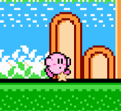
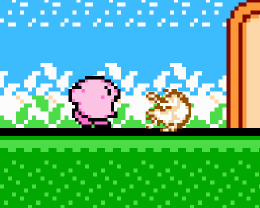

Cos'è un oggetto dinamico
Elemento capace di animarsi, cambiare la sua posizione e interagire all'interno della scena.
Gli elementi dinamici sono
- Kirby
- Nemici e boss
- Particelle
- Proiettili
- Piattaforma Mobile
Particella
Singolo elemento visivo: animato, movibile con logica propria (non fisica) e con limitato lifespan all'interno della scena.
Trattato molto spesso dal Garbage Collector.
Proiettile
Estensione della classe Particella pensata per comportarsi più come un RigidBody
Può agganciare un RigidBody qualsiasi e trascinarlo fino al suo esaurimento.
Può danneggiare il RigidBody con cui viene in contatto.
Trattato molto spesso dal Garbage Collector.